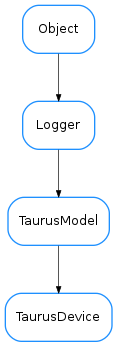

TaurusDevice¶

-
class
TaurusDevice(name, **kw)[source]¶ Bases:
taurus.core.taurusmodel.TaurusModel-
SHUTDOWNS= (2, 3, 4)¶ A Device object representing an abstraction of the PyTango.DeviceProxy object in the taurus.core layer
-
classmethod
buildModelName(parent_model, relative_name)[source]¶ build an ‘absolute’ model name from the parent model and the ‘relative’ name. - If parent_model is a TaurusDatabase, the return is a composition of the database model name and is device name - If parent_model is a TaurusDevice, the relative name is ignored and the parent name is returned
-
isValidDev()[source]¶ returns True if the device is in “working conditions
The default implementation always returns True. Reimplement it in subclasses if there are cases in which the device cannot be queried (e.g. in Tango, the TangoDevice object may exist even if there is not a real hardware device associated, in which case this method should return False)
-